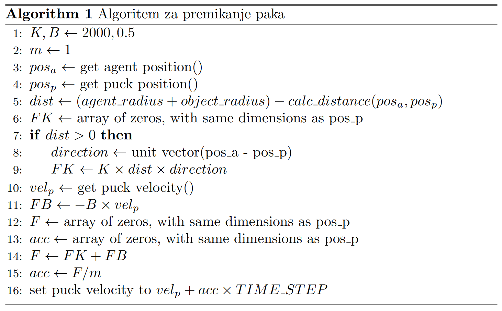
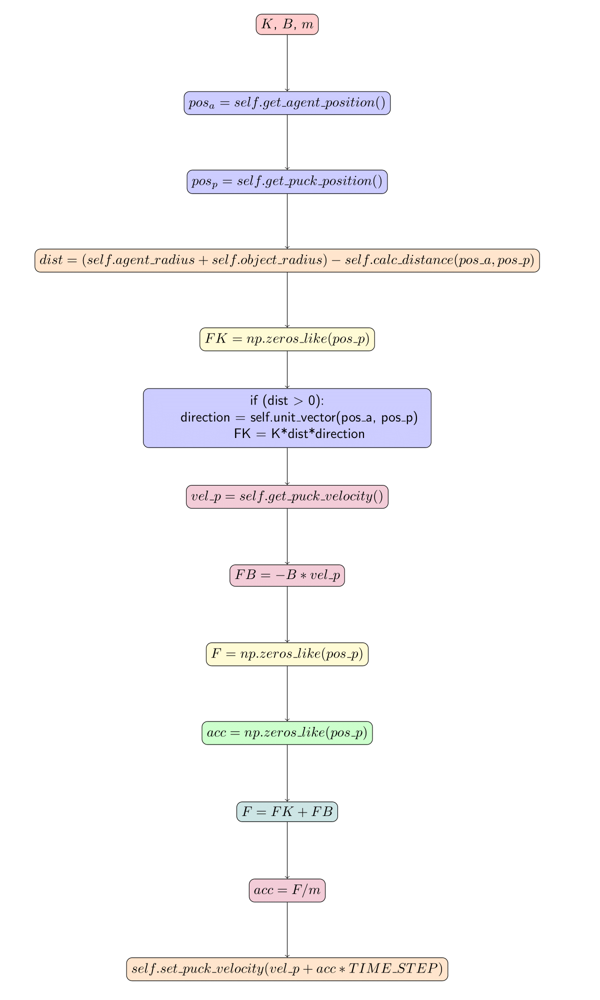
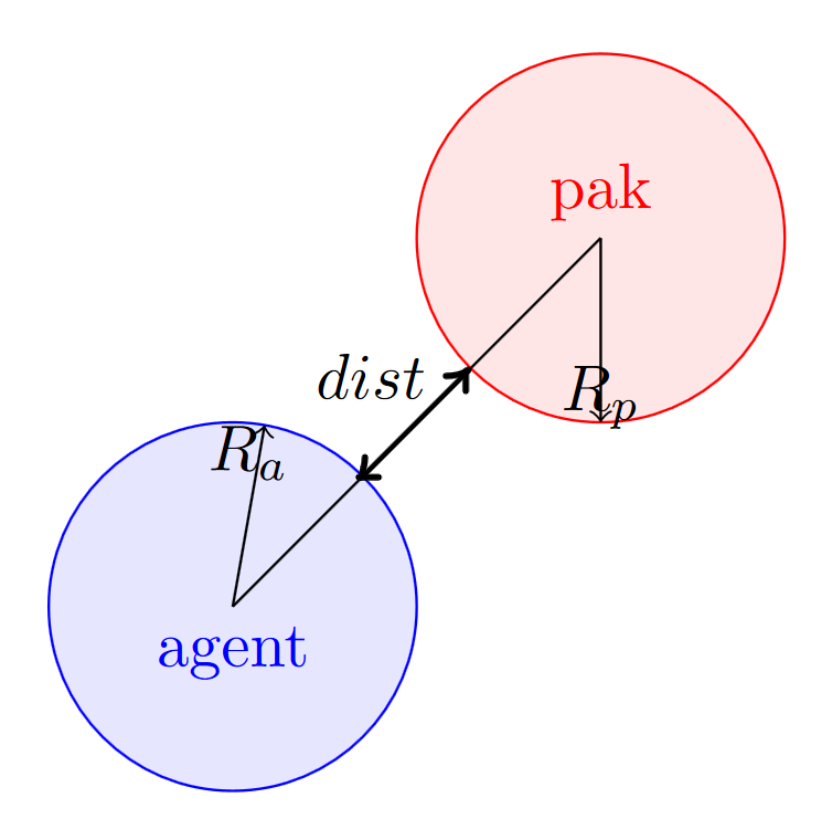
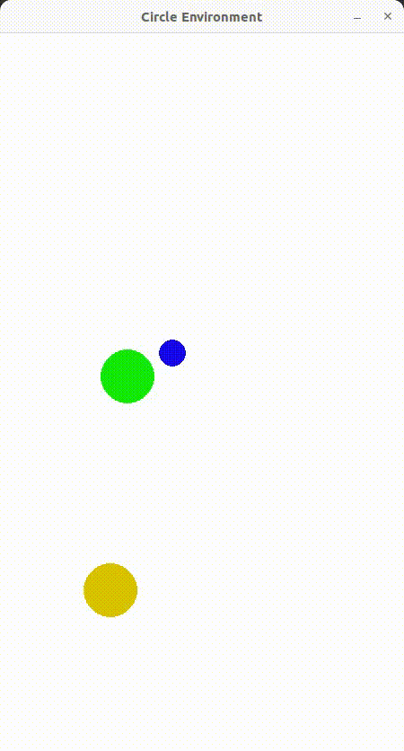
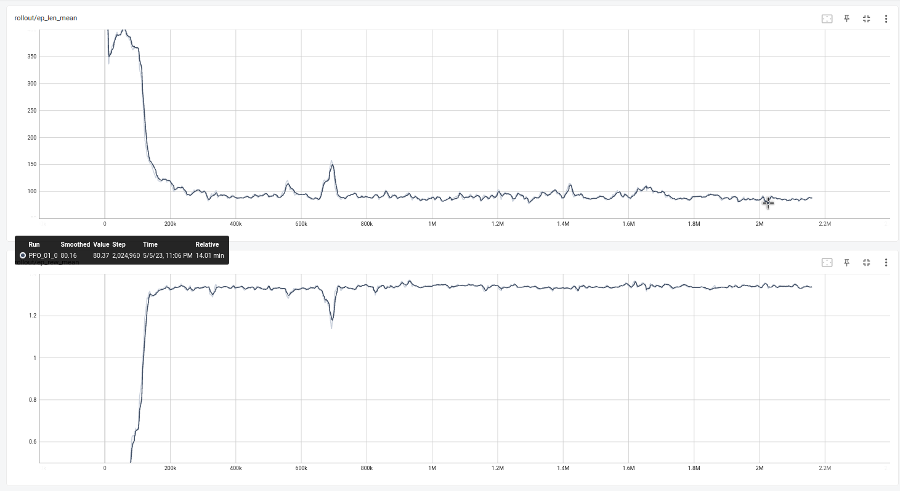
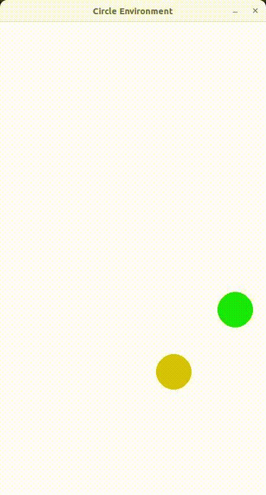
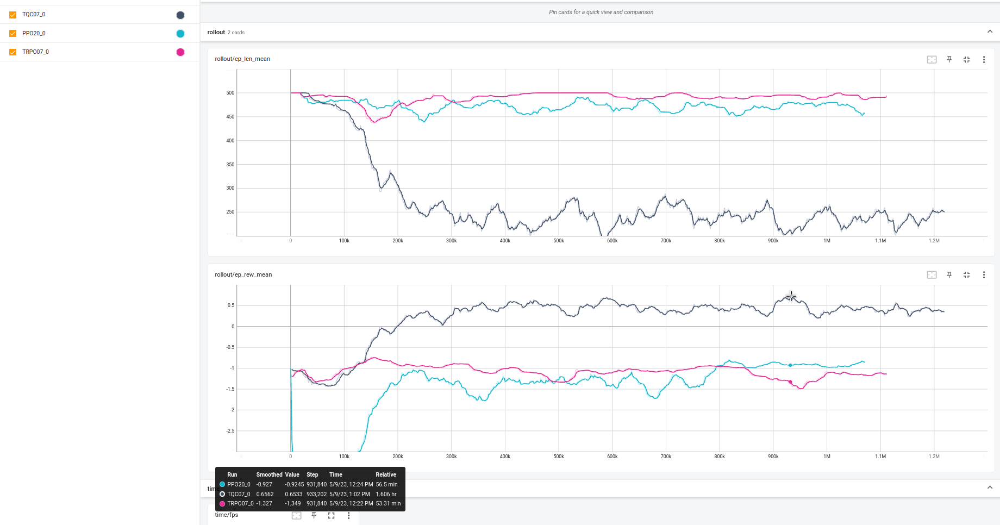
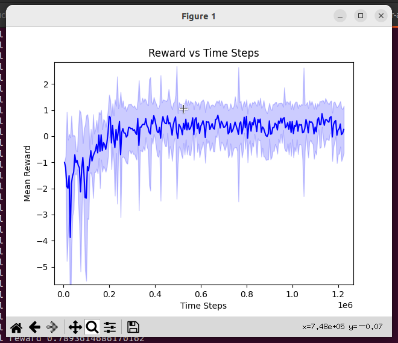

Dinamika agenta s pakom
Popravki funkcij
__init__()
self.observation_space = spaces.Box(low=np.array([0.0, 0.0, 0.0, 0.0, 0.0, 0.0]), high=np.array([self.width, self.height, self.width, self.height]), dtype=np.float32)
_get_obs()
reset()
self.reset_agent((np.random.uniform(self.agent_radius*1.5, self.width - self.agent_radius*1.5), np.random.uniform(self.agent_radius*1.5, self.height - self.agent_radius*1.5)))
self.reset_puck((np.random.uniform(self.object_radius+self.agent_radius*3, self.width - self.object_radius-self.agent_radius*3), np.random.uniform(self.object_radius+self.agent_radius*3, self.height - self.object_radius-self.agent_radius*3)))
step()
Po spodnjem algoritmu napišite kodo za izračun hitrosti paka.

Razlaga algoritma:
- Nastavite K na 2000 in B na 0.5
- Nastavite m na 1
- Pridobite položaj agenta in ga shranite v pos_a
- Pridobite položaj paka in ga shranite v pos_p
- Izračunajte razdaljo med agentom in pakom kot (agent_radius+object_radius) - calc_distance(pos_a, pos_p) in jo shranite v dist
- Ustvari spremenljivko FK z ničlami z enakimi dimenzijami kot pos_p
- Če je dist > 0, potem nastavite
- smer kot enotski vektor razlike med pos_a in pos_p in
- nastavite FK kot K krat dist krat smer
- Pridobite hitrost ploščka in jo shranite v vel_p
- Nastavite FB kot -B krat vel_p
- Ustvari spremenljivko F z ničel z enakimi dimenzijami kot pos_p
- Ustvari spremenljivko acc z ničlami, ki ima enake dimenzije kot pos_p
- Nastavite F kot vsoto FK in FB
- Nastavite acc kot F, deljeno z m
- Posodobite hitrost ploščka tako, da jo nastavite na vel_p plus acc krat TIME_STEP

Izračun trka med krogoma 
step()
Končanje epizode, ko poteče čas:
Dotik s pakom
step()
V pogoj za izračun sile kontakta med agentom in pakom dodaj kodo za pozitivno nagrado reward += 1.0 in končanje epizode.
Psevdokoda:
Odbijanje paka izven okolja
step()
V pogoj za izračun sile kontakta med agentom in pakom dodaj kodo za majhno pozitivno nagrado reward = 0.1.
Definirajte novo funkcijo is_puck_outside_screen in jo dodajte za funkcijo is_agent_outside_screen.
def is_puck_outside_screen(self):
outside = False
if (self.object.position.x < self.object_radius) or (self.object.position.x > (self.width - self.object_radius)):
outside = True
if (self.object.position.y < self.object_radius) or (self.object.position.y > (self.height - self.object_radius)):
outside = True
return outside
V step() dodate pogoj za končanje epizode z pozitivno nagrado:

Nagrada skozi čas s PPO metodo za odboj paka iz okolja 
Streljanje na zgornji rob
Za omejitev okolja uporabite funkcijo self.wall_contact_force(object, object_radius, K), ki izračuna silo kontakta med objektom in stenami. Silo prištejte k silami, ki delujejo na pak.
Funkcijo self.wall_contact_force(object, object_radius, K) dodajte v skripto circle_world.py.
def wall_contact_force(self, object, object_radius, K):
wall_positions = np.array([[0, 0], [self.width, 0], [0, 0], [0, self.height]])
wall_normals = np.array([[1, 0], [-1, 0], [0, 1], [0, -1]])
x_pos, y_pos = object.position.x, object.position.y
distances = [np.dot(wall_normals[i], [x_pos, y_pos]) - np.dot(wall_normals[i], wall_positions[i]) for i in range(len(wall_positions))]
# Find the closest wall
closest_wall_index = np.argmin(distances)
closest_wall_normal = wall_normals[closest_wall_index]
# Calculate the distance between the circle and the closest wall
distance_to_wall = distances[closest_wall_index] - object_radius
force = np.array([0, 0])
# Calculate the interaction force between the circle and the closest wall
if distance_to_wall <= 0:
force = -K * distance_to_wall * closest_wall_normal
return force
Primer, ki kaže kako je mogoče omejiti gibanje agenta
FWa = self.wall_contact_force(self.agent, self.agent_radius, K)
agent_vel = action + FWa/m*TIME_STEP
self.set_agent_velocity(agent_vel)
Nagrada za uspešno končanje epizode:
if FW[1] > 0.0: #Sila, ki kaže v -y smeri, se zgodi le ob trku z zgornjo steno
reward += 1.0
done = True
Za nagrado lahko tudi izračunate parameter delež smeri sile proti središču zgornjega roba ter oblikujete nagrado, ki bo pozitivno nagradila trke agenta s pakom proti zgornjemu robu in z negativno nagrado kaznovala trke v napačno smer.
FK_mag = np.linalg.norm(FK)
F_comp = self.calculate_component(self.get_puck_position(), np.array([self.width/2, 0.0]), FK/FK_mag)
reward += 0.05*F_comp
Lahko nagradite še z kaznijo, da se agent izogiba stenam in strelom z odboji paka od sten.
if np.linalg.norm(FWa) > 0:
reward += -1.0/self.time_steps*10 # kazen za dotike agenta s steno
if FW[1] > 0.0:
reward += 1.0
done = True
elif np.linalg.norm(FW) > 0.0:
reward += -1.0/self.time_steps*10 # kazen za dotike paka s stenami
Za učenje uporabite metodo TQC.
policy_kwargs = dict(n_critics=2,
n_quantiles=25)
model = TQC("MlpPolicy",
env=env,
tensorboard_log=logdir,
verbose=1,
policy_kwargs=policy_kwargs)

Primerjava učenja treh metod: PPO, TRPO in TQC

Nagrada skozi čas za TQC metodo 